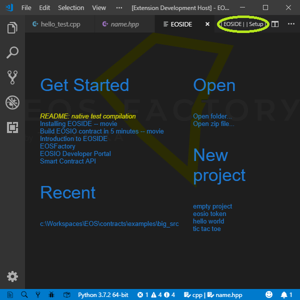
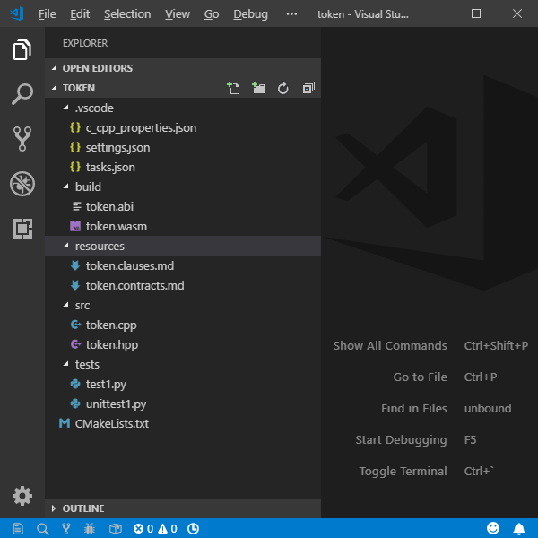
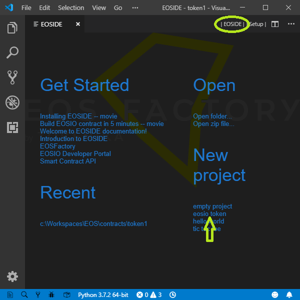
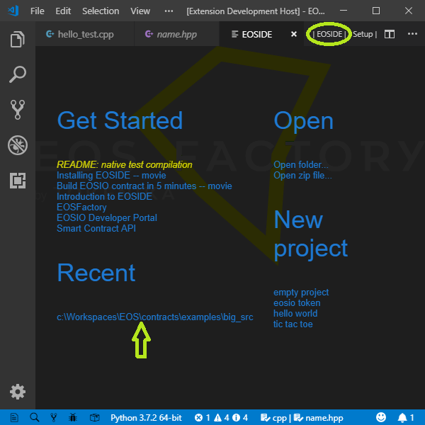
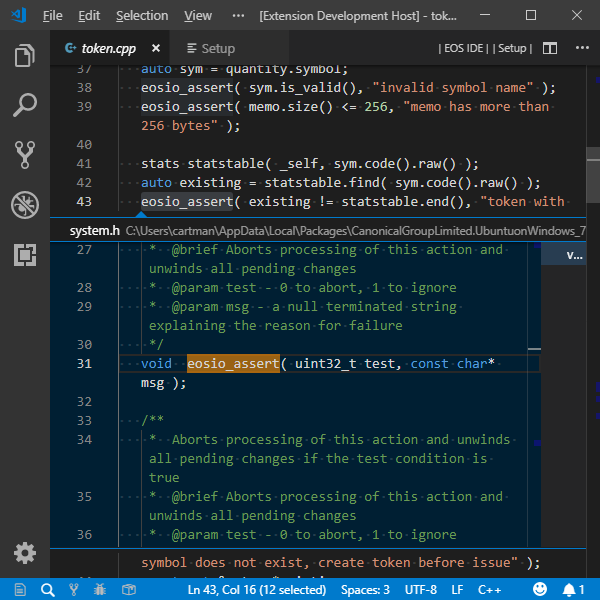
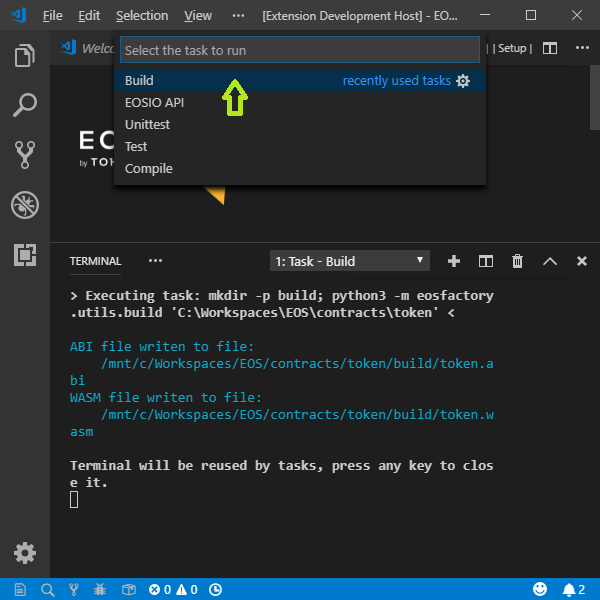
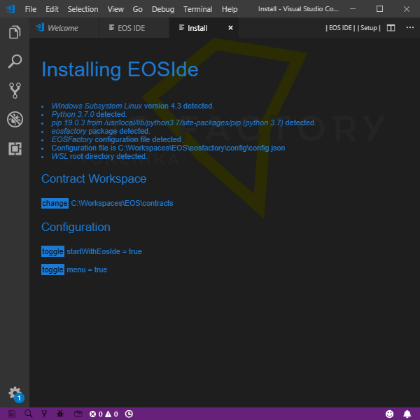

EOSIDE - Overview of the Main Features¶
EOSIDE is an Integrated Development Environment for EOSIO smart-contracts.¶
EOSIDE organizes the workflow of development process for EOSIO smart-contracts. It leverages the functionality of EOSFactory and it’s implemented as a Visual Studio Code (VSC) extension.
EOSIDE has the following features:
- project standardization,
- easy access to project archive,
- referencing documentation and tutorials,
- automatic availability of standard libraries,
- dependency management,
- IntelliSense code completion,
- compilation and building,
- testing,
- deployment.
Watch a short video demonstrating EOSIDE in action. And here is another video demonstrating the setup process and a Hello World test.
User interface¶
EOSIDE’s user interface is composed of two views.
The standard view is named EOSIDE and is displayed when VSC is started empty, i.e. with the code -n "" command.
Get Started view
Let’s go through its options:
- Get Started contains links to tutorials and other documentation.
- New project lets you create a new project from a template.
- Recent lists existing projects.
- Open triggers specific actions.
- And the two menu buttons located in the title bar, namely
EOSIDEandSetup, display corresponding views.
Project standardization¶
EOSIDE introduces a standardized layout for the smart-contract’s folder:
.vscode– system folderbuild– folder where contract WASM and ABI files goresources– folder containing Ricardian contract files etc.src– folder containing CPP/C source filesinclude– folder containing header filestests- folder containing Python scripts, especially EOSFactory scriptsCMakeLists.txt- the CMake lists file of the project
An example of the above layout is shown below:
Project layout
Creating new project¶
With EOSIDE it’s easy to create a new project. A new project may be created empty, or it can be based on a template.
Switch to the EOSIDE screen and select the template by clicking it:
New project
Next, create a folder named after the new project. Select the new folder, click the Open button. The project folder should appear in the VSC explorer panel. Also, the path to the project is added to the Recent list, which becomes active and allows you to open any of the listed projects.
Recent list
Dependency management¶
Dependency management is implemented in the Setup view, as shown in the following screenshot.
 Setup view
Setup view
Let’s go through its options:
Include lists directories containing headers involved in the project. This list is extracted from the content of the
.vscode/c_cpp_properties.jsonfile generated byms-vscode.cpptools. The entries can be edited by clicking buttons next to them. Also, new items can be added. Note: the left mouse button opens native dialog, the right one opens VSCode input box. Note: on Windows and WSL Ubuntu all file paths are expressed relative to theWSL root.Libs lists libraries resolving outer dependencies of the project.
Compiler Options lists parameters of the WASM compiler.
Contract Account defines the account that holds the smart-contract. Its name has to be chosen from a list given with the bash command:
python3 -m eosfactory.testnets
The buttons in the top, labelled
Compile,Build,EOSIDEandBash, trigger corresponding actions. TheBashbutton, available on Windows only, starts a new bash terminal. All these actions can be invoked with keyboard shortcuts or with extension commands.
All the dependencies are stored in the .vscode/c_cpp_properties.json file. This file feeds the compile procedures, build procedures and the IntelliSense features of VSC.
Code completion with IntelliSense¶
VSC has the IntelliSense code completion feature built-in, but it is only functional if proper metadata is provided. EOSIDE supplies this metadata for EOS smart-contracts automatically.
As an example, the following screenshot shows the result of the Pick Definition command applied to the check function.
Intellisense
Compile and build¶
The compilation process does not generate any output files. Its purpose is to verify that the source code of the contract can be built, and if not, to produce an error log. Whereas, the building process results in generating ABI and WASM files.
The compilation process requires that project dependencies are satisfied, such as included headers and linked libraries. The dependencies registered for the project, as explained here, are automatically applied.
VSC style: compile and build with VSC tasks and commands¶
To compile:
- VSC task:
Terminal>Run Task...>Compile - VSC command:
ctrl+shift+p>eosid compile - keyboard shortcut:
ctrl+shift+c
To build:
- VSC task:
Terminal>Run Build Task... - VSC command:
ctrl+shift+p>eosid build - keyboard shortcut:
ctrl+shift+b
The picture below shows how you can access tasks in VSC:
Build task
Build using CMake¶
If you are on Windows, the default terminal for VSC is PowerShell, while the CMake operations have to be executed within the Ubuntu bash. In VSC, to open a new Ubuntu bash terminal use the ctrl+shift+t shortcut. Alternatively, issue the bash command in the PowerShell terminal.
In the Ubuntu bash terminal, type these commands:
cd build
cmake ..
make
As a result, you should get a response similar to this:
cartman@cartman-PC:/mnt/c/Workspaces/EOS/contracts/token$ cd buildcartman@cartman-PC:/mnt/c/Workspaces/EOS/contracts/token/build$ cmake ..
-- Configuring done
-- Generating done
-- Build files have been written to: /mnt/c/Workspaces/EOS/contracts/token/build
cartman@cartman-PC:/mnt/c/Workspaces/EOS/contracts/token/build$ make
Scanning dependencies of target abi
ABI file written to file:
/mnt/c/Workspaces/EOS/contracts/token/build/token.abi
Built target abi
Scanning dependencies of target wast
WASM file writen to file:
/mnt/c/Workspaces/EOS/contracts/token/build/token.wasm
Built target wast
cartman@cartman-PC:/mnt/c/Workspaces/EOS/contracts/token/build$
Build with EOSFactory¶
You can build your smart-contract programmatically using Python.
First, switch to the Python console:
python3
Once the Python prompt appears, continue with these commands:
from eosfactory.eosf import ContractBuilder
ContractBuilder().build()
This is the expected outcome:
Python 3.5.2 (default, Nov 23 2017, 16:37:01)
[GCC 5.4.0 20160609] on linux
Type "help", "copyright", "credits" or "license" for more information.
>>> from eosfactory.eosf import ContractBuilder
>>> ContractBuilder().build()
ABI file writen to file:
/mnt/c/Workspaces/EOS/contracts/token/build/token.abi
WASM file writen to file:
/mnt/c/Workspaces/EOS/contracts/token/build/token.wasm
Deploy contract¶
Deployment means attaching a smart-contract to an EOS account. A default account can be defined with the Setup view.
The following subsections show three ways of deploying the current project’s smart-contract to the default account.
Deploy with VSC command¶
- VSC command:
ctrl+shift+p>eosid deploy - keyboard shortcut:
ctrl+shift+y
Deploy with Ubuntu bash¶
python3 -m eosfactory.deploy
Deploy with EOSFactory¶
import eosfactory.core.logger as logger
from eosfactory.shell.contract import Contract
from eosfactory.core.teos import get_c_cpp_properties
c_cpp_properties = teos.get_c_cpp_properties()
if not c_cpp_properties:
logger.ERROR('''
The testnet account is not set and it can not be found any
c_cpp_properties json file.
''')
if not "contractAccount" in c_cpp_properties:
logger.ERROR('''
The testnet account is not set, and it can not be found in a
c_cpp_properties json file.
''')
testnet_account = eosfactory.core.testnet.get_testnet(testnet_account_name)
if not testnet_account:
logger.ERROR('''
There is not any testnet account named '{}' in the list.
Use the bash command
`python3 -m eosfactory.utils.register_testnet -h`
to get instructions how to register a testnet account.
'''.format(testnet_account_name))
testnet_account.configure()
testnet_account.verify_production()
contract_account = account.restore_account(
testnet_account_name, testnet_account)
Contract(contract_account).deploy()
Execute tests¶
Tests are Python scripts located in the tests directory.
Any test script can be executed in a bash terminal, for example:
python3 tests/test1.py
Testing with CMake¶
In order to use the CMake testing feature, test scripts need to be registered in the CMakeLists file. Here is an example of such registration for a script named test1:
add_test( NAME tests COMMAND python3 ${CMAKE_SOURCE_DIR}/tests/test1.py )
add_test( NAME unittest COMMAND python3 ${CMAKE_SOURCE_DIR}/tests/unittest1.py )
By default all the tests are automatically executed one-by-one, as an overall test. However, it’s possible to run a single test.
Tests are invoked in a bash terminal:
cd build
ctest
Here is the expected output:
Test project /mnt/c/Workspaces/EOS/contracts/token/build
Start 1: tests
1/2 Test #1: tests ............................ Passed 15.98 sec Start 2: unittest
2/2 Test #2: unittest ......................... Passed 16.08 sec
100% tests passed, 0 tests failed out of 2
Total Test time (real) = 32.07 sec
from eosfactory.eosf import *
from eosfactory.shell.account import restore_account
import eosfactory.core.testnet as testnet
testnet = Testnet(
None,
"dgxo1uyhoytn",
"5JE9XSurh4Bmdw8Ynz72Eh6ZCKrxf63SmQWKrYJSXf1dEnoiKFY",
"5JgLo7jZhmY4huDNXwExmaWQJqyS1hGZrnSjECcpWwGU25Ym8tA",
"contract_account"
)
testnet.configure()
testnet.verify_production()
restore_account("contract_account", testnet)
testnet = testnet.KYLIN
testnet.configure()
testnet.verify_production()
restore_account("contract_account", testnet)
Contract(host).deploy()
Installation status¶
With the VSC command ctrl+shift+p > eoside install, you can display the current status of the installation process and edit some of the settings, e.g. the workspace path.
Setup view
If you turn the menu off, you can still access EOSIDE views by using VSC commands:
- Get Started View:
ctrl+shift+p>eoside EOSIDE - Setup View:
ctrl+shift+p>eoside setup - Install View:
ctrl+shift+p>eoside install